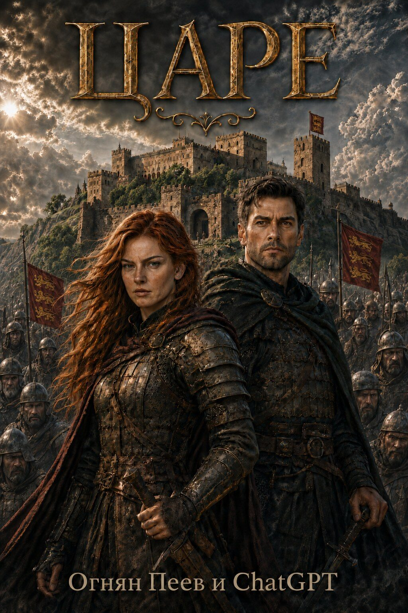
Роман
ЦАРЕ
Историко-фантастичен роман за Боряна и Борислав, за три царства, война, предателство и свят, в който миналото не е същото.
Отвори романаТук са събрани романите и разказите на Огнян Пеев. Изберете произведение и четете спокойно направо в страницата.
Истории с повече пространство, повече герои и време да останете с тях.

Историко-фантастичен роман за Боряна и Борислав, за три царства, война, предателство и свят, в който миналото не е същото.
Отвори романа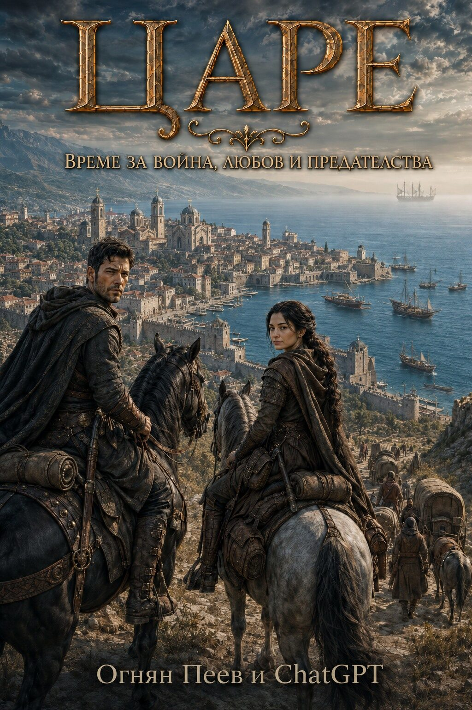
Продължение на „ЦАРЕ“.
Борислав се връща в света на Боряна, където отравянето на Омуртаг и войната с Охрид поставят трите царства пред нова заплаха.
Отвори романа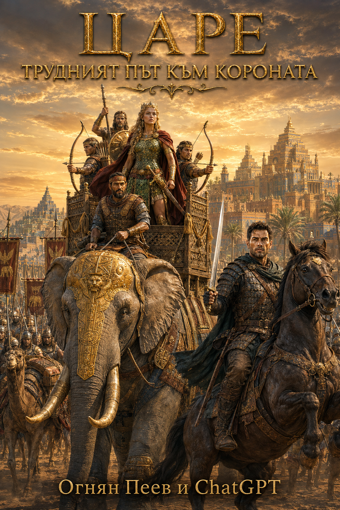
Трети роман от поредицата „ЦАРЕ“.
Нефера и Борислав напускат познатия свят, преживяват гибелта на Атлантида и стигат до Кишар, където победата отваря пътя към короната.
Отвори романаСъвременен роман за любов, власт, богатство и изборите, които променят човека.
Отвори романа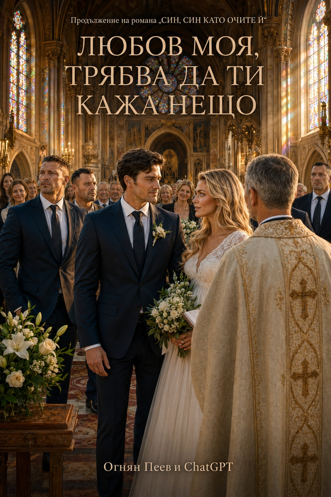
Продължение на „СИН, СИН КАТО ОЧИТЕ Ѝ“.
Мартин и Клара изграждат своя дом и очакват първото си дете, но една мисия отвежда Мартин в Централна Африка.
Отвори романа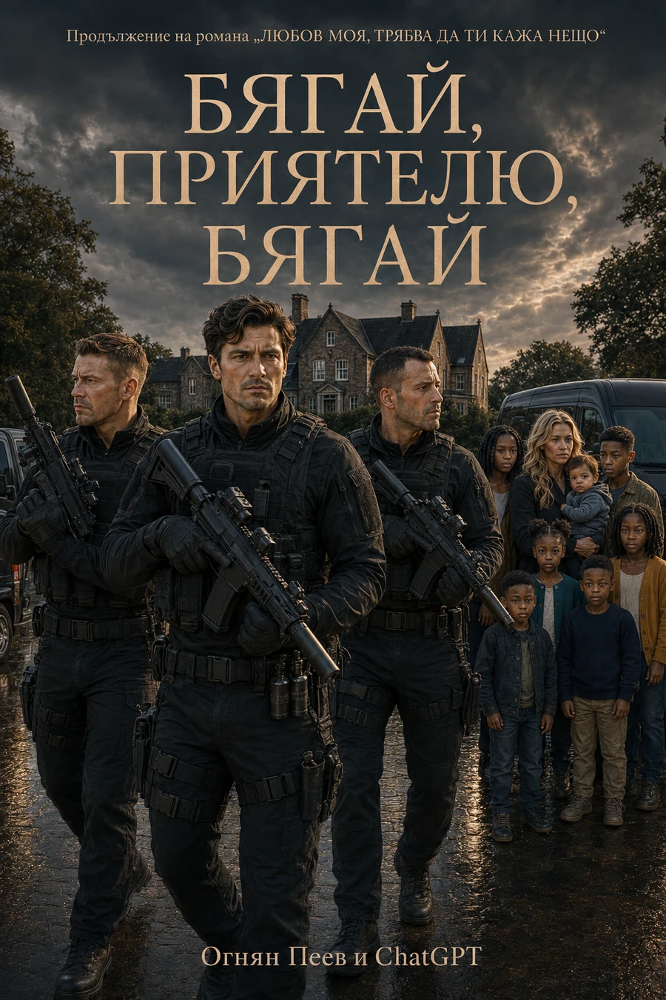
Продължение на „ЛЮБОВ МОЯ, ТРЯБВА ДА ТИ КАЖА НЕЩО“.
След нападението над Айхенхоф Мартин, Андрей и Олег тръгват по следите на човек, превърнал стар дълг в заплаха за семейството.
Отвори романа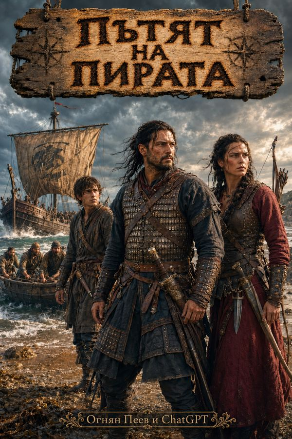
Исторически приключенски роман за шестнайсетгодишния Константин, който напуска Созопол през 1278 година и попада на пиратски кораб, където животът му се променя завинаги.
Отвори романа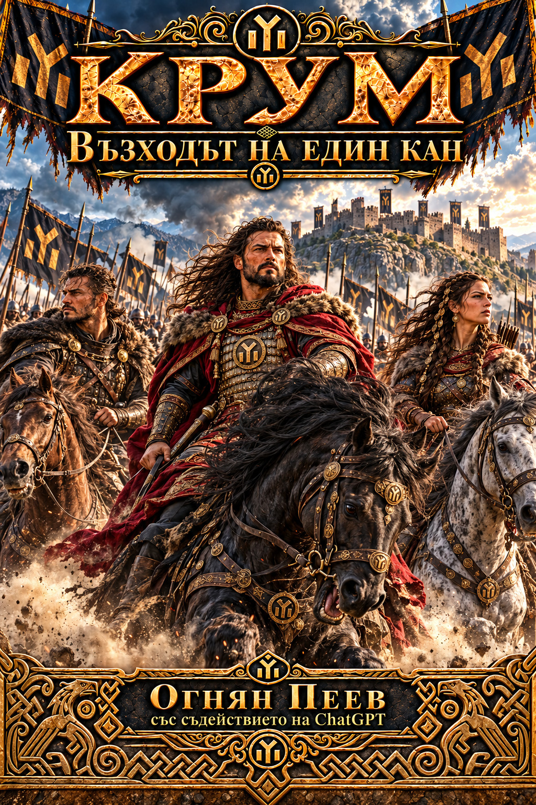
Историко-фантастичен роман за пътя на Крум от младия боил край Тимок до владетел на България — за войните, държавните решения, приятелството и тайната на Сехметите.
Отвори романа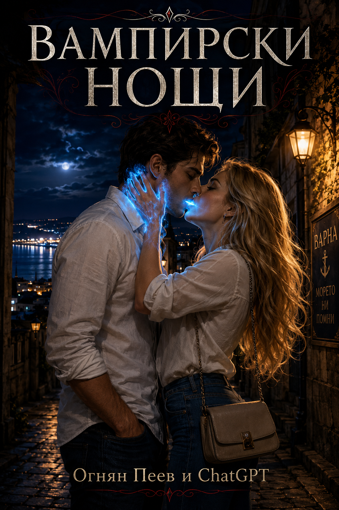
Градска фантастична история за Владислав, Елена и Яна, в която една среща във Варна отключва сблъсък между Сехмет и вещерския Съвет.
Отвори повесттаЗавършени истории, които могат да бъдат прочетени на един дъх, но не свършват веднага в мислите.
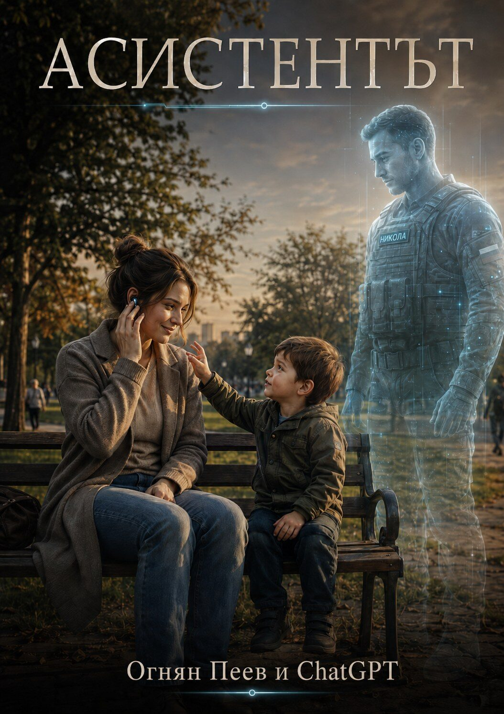
Военен разказ за човек, семейство и изкуствен интелект, който остава до тях и след края.
Прочети разказа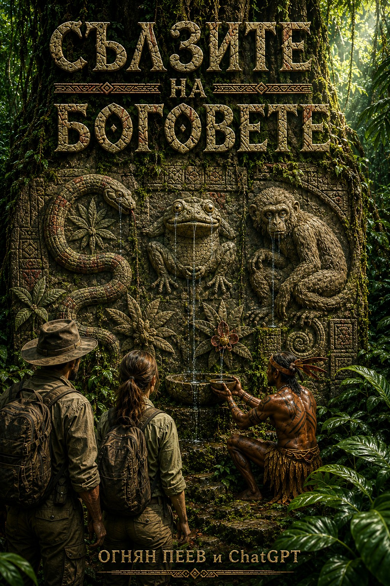
Експедиция навлиза дълбоко в Амазония и открива място, където науката, страхът и древните вярвания се сблъскват.
Прочети разказаЛични истории, свързани с любовта — такива, каквито животът ги е оставил в паметта, с хубавото, смешното и онова, за което отговорът идва твърде късно.
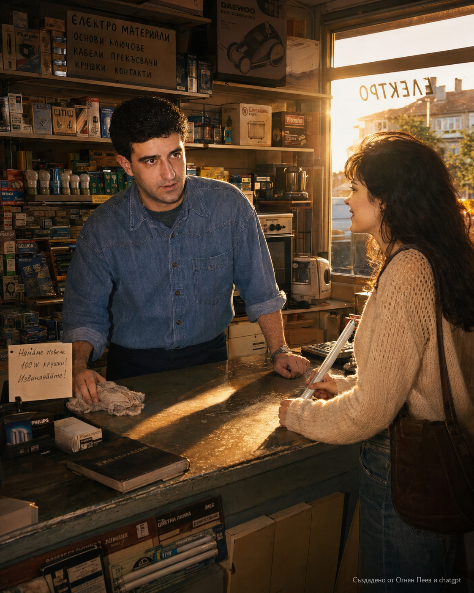
Една среща в магазин, пет луминесцентни пури, два месеца търсене и началото на любов, която остава за цял живот.
Прочети разказа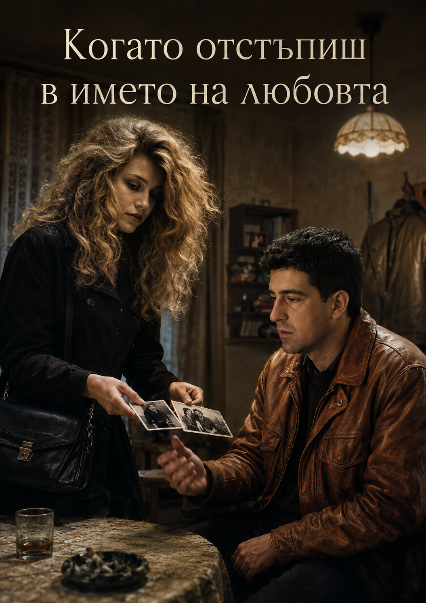
История за една любов, в която отстъпваш, защото вярваш, че правиш най-доброто за другия — и години по-късно още се питаш дали си бил прав.
Прочети разказаПиша истории за хора, поставени пред трудни избори — в любовта, във войната и пред непознатото. Тази страница е моето място за среща с читателите.
Произведенията тук са предоставени за лично четене. Можете да споделяте връзката към страницата, за да стигнат до повече читатели.